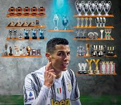

HOME |
TITÚLOS|
CAMPANHAS|
CONTATO
Titulos
Sporting CP Supertaça de Portugal: 2002 Manchester United Premier League: 2006–07, 2007–08, 2008–09 FA Cup: 2003–04 Football League Cup: 2005–06, 2008–09 FA Community Shield: 2007 UEFA Champions League: 2007–08 FIFA Club World Cup: 2008
Real Madrid La Liga: 2011–12, 2016–17 Copa del Rey: 2010–11, 2013–14 Supercopa de España: 2012, 2017 UEFA Champions League: 2013–14, 2015–16, 2016–17 UEFA Super Cup: 2014, 2016 FIFA Club World Cup: 2014, 2016
Juventus Serie A: 2018–19, 2019–20 Coppa Italia: 2020–21 Supercoppa Italiana: 2020
Al Nassr (Atualização sobre títulos com o Al Nassr pode ser necessária)